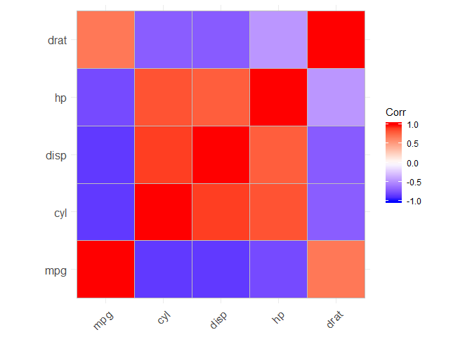
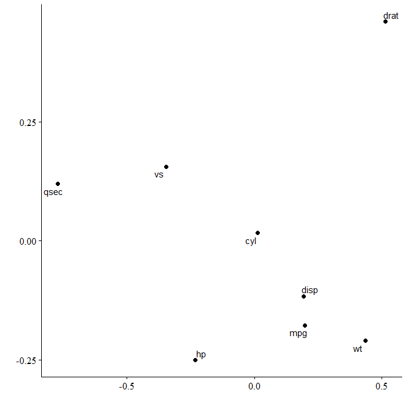
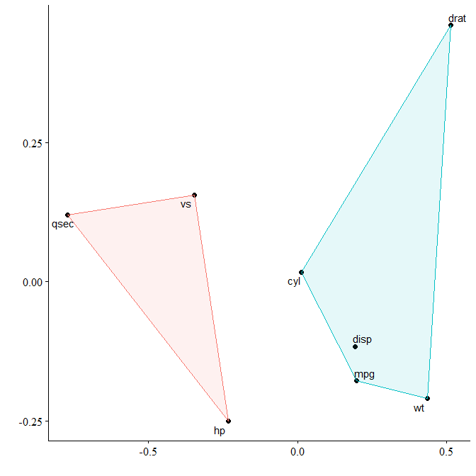
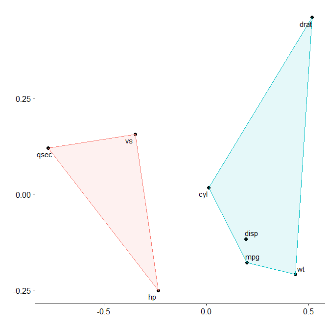
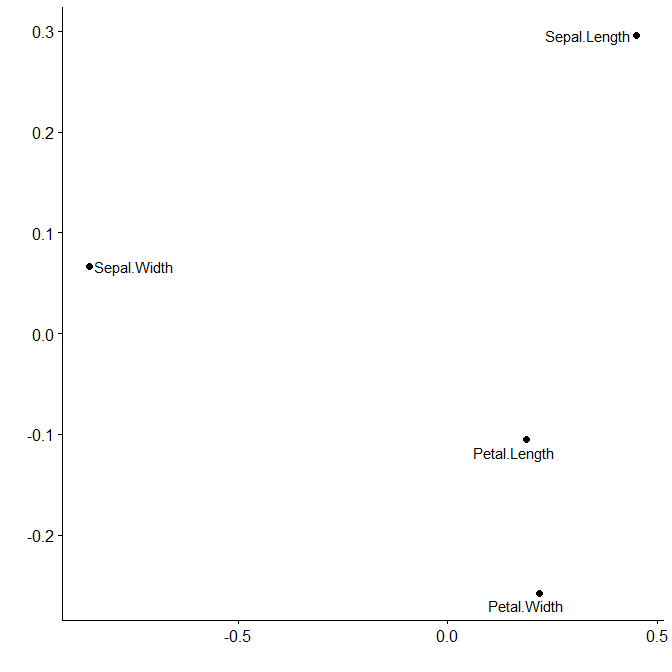

‘corx’ aims to be a Swiss Army knife for correlation matrices. Formatting correlation matrices for academic tables can be challenging. ‘corx’ does all the heavy lifting for you. It runs the correlations, and stores all relevant results in a list. Extract underlying coefficient, pairwise observations and p-values. ‘corx’ will also calculate and format partial correlation matrices.
Basic usage
‘corx’ is built to be as flexible as possible. The simplest way to use ‘corx’ is to supply the first argument with a data.frame.
library(corx) x <- corx(mtcars) x #> corx(data = mtcars) #> #> ---------------------------------------------------------------------- #> mpg cyl disp hp drat wt qsec vs am gear carb #> ---------------------------------------------------------------------- #> mpg - -.85* -.85* -.78* .68* -.87* .42* .66* .60* .48* -.55* #> cyl -.85* - .90* .83* -.70* .78* -.59* -.81* -.52* -.49* .53* #> disp -.85* .90* - .79* -.71* .89* -.43* -.71* -.59* -.56* .39* #> hp -.78* .83* .79* - -.45* .66* -.71* -.72* -.24 -.13 .75* #> drat .68* -.70* -.71* -.45* - -.71* .09 .44* .71* .70* -.09 #> wt -.87* .78* .89* .66* -.71* - -.17 -.55* -.69* -.58* .43* #> qsec .42* -.59* -.43* -.71* .09 -.17 - .74* -.23 -.21 -.66* #> vs .66* -.81* -.71* -.72* .44* -.55* .74* - .17 .21 -.57* #> am .60* -.52* -.59* -.24 .71* -.69* -.23 .17 - .79* .06 #> gear .48* -.49* -.56* -.13 .70* -.58* -.21 .21 .79* - .27 #> carb -.55* .53* .39* .75* -.09 .43* -.66* -.57* .06 .27 - #> ---------------------------------------------------------------------- #> Note. * p < 0.05
Partial correlations
To calculate correlations controlling for other variables, use the ‘z’ argument.
x <- corx(mtcars, z = wt, caption = "Correlations controlling for weight") x #> corx(data = mtcars, z = wt, caption = "Correlations controlling for weight") #> #> Correlations controlling for weight #> --------------------------------------------------------------- #> mpg cyl disp hp drat qsec vs am gear carb #> --------------------------------------------------------------- #> mpg - -.56* -.34 -.55* .18 .55* .44* .00 -.06 -.40* #> cyl -.56* - .72* .68* -.33 -.74* -.73* .04 -.07 .34 #> disp -.34 .72* - .60* -.24 -.62* -.57* .07 -.10 .04 #> hp -.55* .68* .60* - .04 -.80* -.57* .39* .42* .69* #> drat .18 -.33 -.24 .04 - -.05 .08 .43* .50* .34 #> qsec .55* -.74* -.62* -.80* -.05 - .79* -.49* -.39* -.65* #> vs .44* -.73* -.57* -.57* .08 .79* - -.36* -.17 -.44* #> am .00 .04 .07 .39* .43* -.49* -.36* - .67* .54* #> gear -.06 -.07 -.10 .42* .50* -.39* -.17 .67* - .71* #> carb -.40* .34 .04 .69* .34 -.65* -.44* .54* .71* - #> --------------------------------------------------------------- #> Note. * p < 0.05
Asymmetric correlation matrices
Sometimes you only want the relationships for a subset of variables. Asymmetric matrices are useful in these instances. The arguments ‘x’ and ‘y’ can be used to achieve this. ‘x’ sets row variables, ‘y’ sets column variables.
Changing formatting
Users can further customise the table for publication. For instance, the numbers of significance stars can be changed, the area above the diagonal omitted, and captions and notes added.
x <- corx(mtcars[,1:5], stars = c(0.05, 0.01, 0.001), triangle = "lower", caption = "An example correlation matrix") x #> corx(data = mtcars[, 1:5], stars = c(0.05, 0.01, 0.001), triangle = "lower", #> caption = "An example correlation matrix") #> #> An example correlation matrix #> -------------------------------------- #> 1 2 3 4 #> -------------------------------------- #> 1. mpg - #> 2. cyl -.85*** - #> 3. disp -.85*** .90*** - #> 4. hp -.78*** .83*** .79*** - #> 5. drat .68*** -.70*** -.71*** -.45** #> -------------------------------------- #> Note. * p < 0.05; ** p < 0.01; *** p < 0.001
Adding descriptive statistics
We can also add in descriptive statistics easily.
x <- corx(mtcars[,1:5], stars = c(0.05, 0.01, 0.001), triangle = "lower", caption = "An example correlation matrix", describe = c(M = mean, SD = sd, kurtosis)) x #> corx(data = mtcars[, 1:5], stars = c(0.05, 0.01, 0.001), triangle = "lower", #> caption = "An example correlation matrix", describe = c(M = mean, #> SD = sd, kurtosis)) #> #> An example correlation matrix #> ------------------------------------------------------------- #> 1 2 3 4 M SD kurtosis #> ------------------------------------------------------------- #> 1. mpg - 20.09 6.03 2.80 #> 2. cyl -.85*** - 6.19 1.79 1.32 #> 3. disp -.85*** .90*** - 230.72 123.94 1.91 #> 4. hp -.78*** .83*** .79*** - 146.69 68.56 3.05 #> 5. drat .68*** -.70*** -.71*** -.45** 3.60 0.53 2.44 #> ------------------------------------------------------------- #> Note. * p < 0.05; ** p < 0.01; *** p < 0.001
To add descriptive columns describe can be set to any combination of the following values: c(“mean”,“sd”,“median”,“iqr”,“var”,“skewness”,“kurtosis”).
Alternatively, you can pass a list of named functions:
x <- corx(mtcars[,1:8], describe = list(Mean = function(x) mean(x), SD = function(x) sd(x))) x #> corx(data = mtcars[, 1:8], describe = list(Mean = function(x) mean(x), #> SD = function(x) sd(x))) #> #> ------------------------------------------------------------------ #> mpg cyl disp hp drat wt qsec vs Mean SD #> ------------------------------------------------------------------ #> mpg - -.85* -.85* -.78* .68* -.87* .42* .66* 20.09 6.03 #> cyl -.85* - .90* .83* -.70* .78* -.59* -.81* 6.19 1.79 #> disp -.85* .90* - .79* -.71* .89* -.43* -.71* 230.72 123.94 #> hp -.78* .83* .79* - -.45* .66* -.71* -.72* 146.69 68.56 #> drat .68* -.70* -.71* -.45* - -.71* .09 .44* 3.60 0.53 #> wt -.87* .78* .89* .66* -.71* - -.17 -.55* 3.22 0.98 #> qsec .42* -.59* -.43* -.71* .09 -.17 - .74* 17.85 1.79 #> vs .66* -.81* -.71* -.72* .44* -.55* .74* - 0.44 0.50 #> ------------------------------------------------------------------ #> Note. * p < 0.05
Making plots
Correlation matrices
There are many useful functions for plotting correlation matrices. ‘corx’ contains a plot function which uses the ‘ggcorrplot’ package.
plot(x)

Multidimensional scaling
Multidimensional scaling enables similarities between variables to be converted to 2D distances. This lets us visualise how variables cluster together.
plot_mds(x)

We can see that variables in mtcars cluster together in two separate groups. If we want to highlight this we can request two clusters to be marked.
plot_mds(x, 2)

You can see that miles per gallon, the number of cylinders, the displacement rate, and the weight of the car are all closely related.
We could control for the number of cylinders and see how this affects relationships.

Here’s another example, this time for the iris dataset:
First we create the corx object. We remove species as it’s not a numeric variable.
cmat <- corx(iris, -Species)# remove Species cmat #> corx(data = iris, x = -Species) #> #> -------------------------------------------------------------- #> Sepal.Length Sepal.Width Petal.Length Petal.Width #> -------------------------------------------------------------- #> Sepal.Length - -.12 .87* .82* #> Sepal.Width -.12 - -.43* -.37* #> Petal.Length .87* -.43* - .96* #> Petal.Width .82* -.37* .96* - #> -------------------------------------------------------------- #> Note. * p < 0.05
Then we can perform multidimensional scaling and plot.
plot_mds(cmat)

We can see that Petal length and width are much more closely related than sepal width and length.